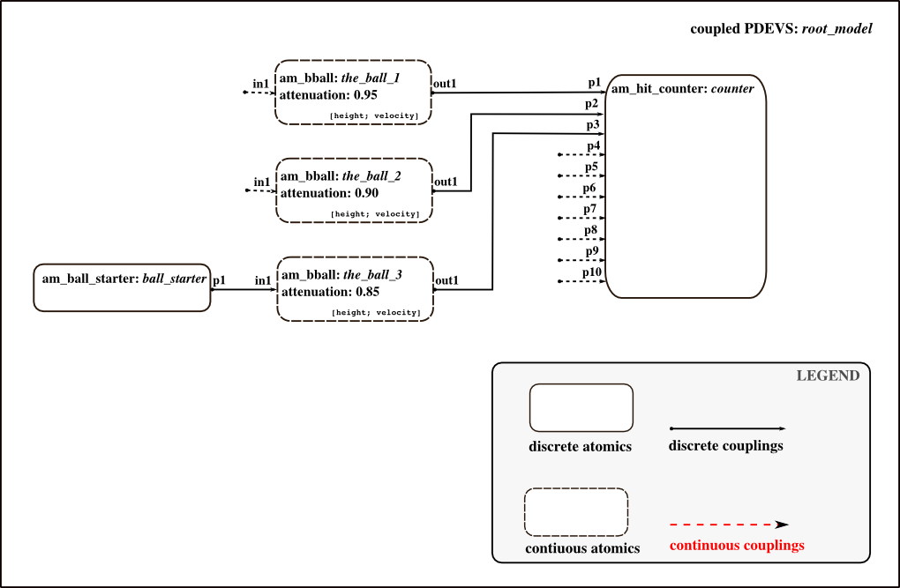
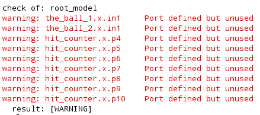
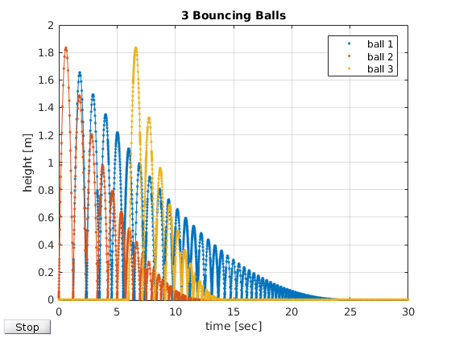

Initialization Script: 3 Bouncing Balls
Inits a combined discrete-continuous model of three bouncing balls with different attenuations. Two balls bouncing from the beginning, the third ball is started by a discrete event after 6 seconds.
Contents
Call: init_3_balls
File: DEVSPATH/02-examples/hybrid/bouncing_balls/init_3_balls.m

Model Structure
Preparation
global SIMUSTOP % to stop simulation by condition SIMUSTOP = 0; global HYBRID HYBRID = 1; % it's a hybrid model elapsed = 0;
Create the Model
Atomic model's classes: am_ball_starter, am_bbball, am_hit_counter
Components for coupled model root_model Since hybrid DEVs is still in experimental phase, hybrid models need to be flattenend, so that there is no hierarchy.
Take care to choose different seeds for random number generators!
% Starts third ball after 6 s defined in s.sigma % This is a discrete atomic. inistates = struct('sigma',6); ball_starter = am_ball_starter('ball_start',inistates,elapsed); % Parameters for the 3 balls heigth = 0; % [m] velocity = 6; % [m/s] % First ball. Bouncing from start. % This is a hybrid atomic. d_inistates = struct('sigma',inf,'active',1,'bounce_start',elapsed,'bounce_end',[]); c_inistates = [heigth; velocity]; attenuation = 0.95; the_ball_1 = am_bball('the_ball_1',d_inistates,c_inistates,elapsed,attenuation); % Second ball. Bouncing from start. % This is a hybrid atomic. d_inistates = struct('sigma',inf,'active',1,'bounce_start',elapsed,'bounce_end',[]); c_inistates = [heigth; velocity]; attenuation = 0.90; % MODELBASE.the_ball_2 = {a_type,a_name,d_inistates,c_inistates,elapsed,attenuation}; the_ball_2 = am_bball('the_ball_2',d_inistates,c_inistates,elapsed,attenuation); % Third ball. Inactive at start. When this ball receives an event from % ball starter, it starts bouncing. % This is a hybrid atomic. d_inistates = struct('sigma',inf,'active',0,'bounce_start',[],'bounce_end',[]); c_inistates = [heigth; velocity]; attenuation = 0.85; the_ball_3 = am_bball('the_ball_3',d_inistates,c_inistates,elapsed,attenuation); % Sink for countig the number of hits to the ground of all balls % This is a discrete atomic. inistates = struct('sigma',inf,'num_hits',[0,0,0,0,0,0,0,0,0,0]); hit_counter = am_hit_counter('hit_count',inistates,elapsed); % Hybrid coupled model root_model y_root = {}; x_root = {}; root_model = hybridcoupled('root_model',x_root,y_root); addcomponents(root_model,{ball_starter,the_ball_1,the_ball_2,the_ball_3,hit_counter}); Zid_model = {'ball_start','p1','the_ball_3','in1';...% start signal from starter to third ball, message: 'start' 'the_ball_1','out1','hit_count','p1';... % hits from first ball to counter, message: 1 'the_ball_2','out1','hit_count','p2';... % hits from second ball to counter, message: 1 'the_ball_3','out1','hit_count','p3'}; % hits from third ball to counter, message: 1 set_Zid(root_model, Zid_model); CZid_model = {};% no continuous couplings, continuous variables of balls don't influence each other %set_CZid(root_model, CZid_model);
After Incarnation
Display and check the outermost coupled. If you like to, set the observe flag to 1, so that all discrete state variables in s are tracked automatically.
showall(root_model);
% set_observe(root_model, 1);
Check(root_model);
Because we did not connect all ports, the Check() function results in:

No problem here - it is just a warning and we did it on purpose. ;-)
Define some values for ODE-Plot
Continuous variables can be plotted during simulation, if desired. If you want this, define here:
global ODEPLOT ODEPLOT = 1; % if ODEPLOT is set, following structure needs to be definend: plot_params = struct('OutputSel_vec',[1 3 5],... % decide, which continuous variables are to be plotted. HERE: TruckLevel, TankLevel, CannerLevel 'name_strg','Hybrid Example',... % name of the figure 'xlim_interv',[0 30],... % xlim of axes 'ylim_interv',[-0.01 2],... % ylim of axes 'xlabel_strg','time [sec]',... % label for x-axes 'ylabel_strg','height [m]',... % label for y-axes 'title_strg','3 Bouncing Balls',...% title for plot 'num_legend', 3,... % number of variables, for which a legend is supported 'legend1','ball 1','legend2','ball 2','legend3','ball 3');% legend texts
ODEPLOT = 1 results in:

Finally
Done! Now the root_coordinator can be called to simulate the model.
without plotting: [root_model,tout,yout,teout,yeout,ieout]=r_c_hybrid(root_model,tstart,tend)
with plotting: [root_model,tout,yout,teout,yeout,ieout]=r_c_hybrid(root_model,tstart,tend,plot_params)
To simulate a scenario that fits with ODE-Plot settings above use tstart = 0, tend = 30
After simulation you can get some statistics and plot the results via analyse_3_balls(root_model,tstart,tend,tout,yout)
Commands to initialize, simulate, analyse the example:
>> init_3_balls;
>> [root_model,tout,yout,teout,yeout,ieout] = r_c_hybrid(root_model,0,30,plot_params);
>> analyse_3_balls(root_model,0,30,tout,yout);
DEVS Tbx Home Examples Modelbase << Back